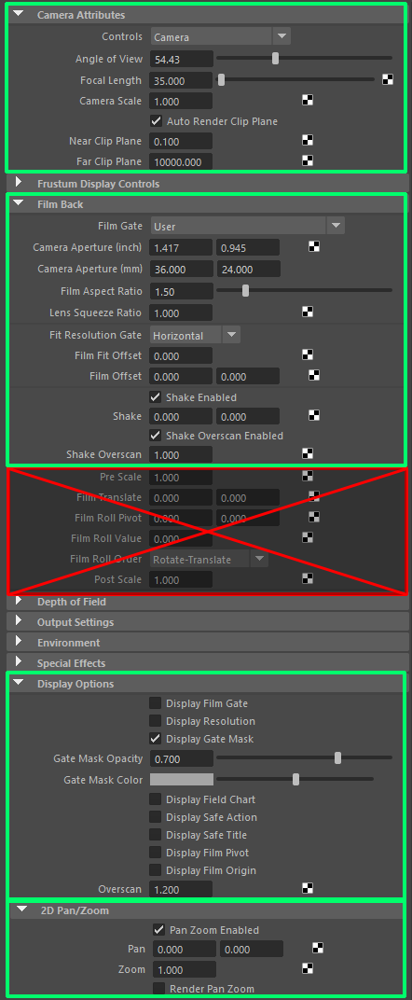

カメラのアトリビュートについて¶
このページの目次:
対応しているアトリビュート¶
RenderOverrideは、カメラの主要なアトリビュートに対応しています
一部アトリビュートはサポートされていないため、ご注意ください
サポートされていないアトリビュートの値を変更すると、テキストやレターボックスなどのレイアウトが崩れてしまいます
次の図の緑枠は、対応しているアトリビュートです
赤枠は、対応していないアトリビュートです

このページの目次:
RenderOverrideは、カメラの主要なアトリビュートに対応しています
一部アトリビュートはサポートされていないため、ご注意ください
サポートされていないアトリビュートの値を変更すると、テキストやレターボックスなどのレイアウトが崩れてしまいます
次の図の緑枠は、対応しているアトリビュートです
赤枠は、対応していないアトリビュートです